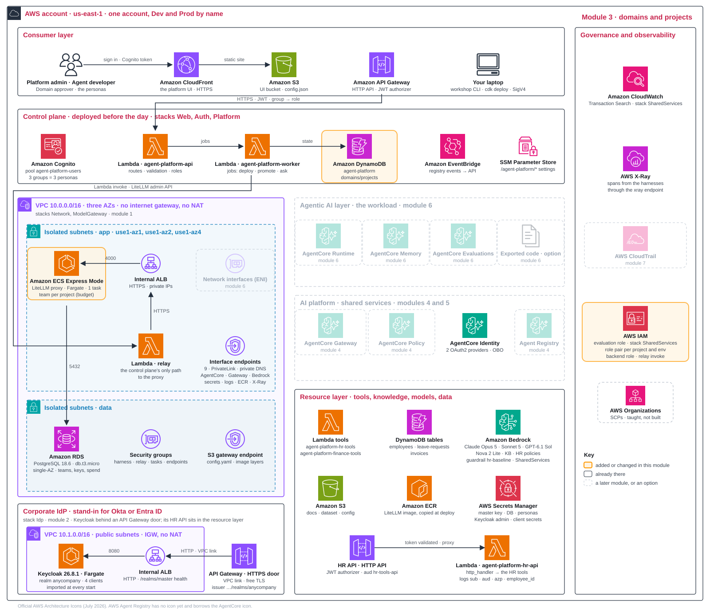

The platform as an operating model Explain · 10 min
The control plane has four parts: UI, API, state table and worker. Together they hold three shared things:
- Rules: policies, guardrails and caps.
- Approved lists: models, tools and knowledge.
- Ownership records: domains, projects and releases.
workshop apply 4 in AgentCore and only registered with the control plane, which lists them on the project's Resources tab. Keys come later: the Dev key you create by hand in module 5 is adopted, the Prod key is created by the worker at promotion in module 6. Governance defines the rules and where each is checked.Four decisions Design · 10 min
3.1How are tenants modelled?
| Option | Pros | Cons | Choose when |
|---|---|---|---|
| Tags only | no extra objects | nothing enforces the boundary | a handful of agents |
| Per-project objects stamped from templates: roles per environment, a model budget | Cedar, CloudTrail and cost tags all see the project | many objects; the template must be right | many projects in one account |
| An account per project | the strongest wall | account sprawl; slow onboarding | regulated, high-value workloads |
This workshop. Templates create two kinds of project resources:
- Per project: a model-gateway team with budget and rate caps.
- Per environment: an IAM role pair and, later, a key per model.
Two shortcuts: roles trust the account root; an empty tool list allows every tool. Tighten both templates for production.
Production path. Choose the smallest enforced boundary each layer needs. Record what would trigger dedicated resources; give sensitive projects their own account.
| Layer | Shared, if this is what enforces the boundary | Dedicated when |
|---|---|---|
| Account and network | project roles, scoped resources, an approved egress path | independent administration, a regulatory placement, or containment the shared account cannot give |
| Runtime and session | the runtime's session isolation; the caller bound to its session on the server side | different trust, credentials or capacity needs |
| Gateway and tools | a permit per tool and role; the target checks the caller's data scope | different credential owners or policy administrators; a tool that cannot scope per caller |
| Data and state | trusted tenant keys, a filter pinned at the target, scoped storage permissions | confidentiality, key ownership or deletion rules a filter cannot satisfy |
| Catalogue and telemetry | scoped record and trace read permissions; enforced approval gates | metadata or traces too sensitive for a shared view |
For every shared layer, record two boundaries:
- Enforcement: the permission or trusted filter that separates tenants. Namespaces, UI filters and session labels alone do not.
- Failure and ownership: outages, noisy tenants, revocation and data cleanup. Security isolation does not guarantee capacity isolation.
3.2Governance: which rule lives at which level?
| Option | Pros | Cons | Choose when |
|---|---|---|---|
| Everything at platform level | one team, one rulebook | a bottleneck; rules far from the business | one domain, a few agents |
| Layered: the platform sets guardrails, domains approve, projects own the rest, with a gate at every promotion | each rule sits with the people who know; evidence at every level | three levels and a gate to design; rollout needs care | several domains sharing one platform |
| Each project governs itself | fastest for teams | no shared rules; every team reinvents them | never for shared tools or models |
This workshop. Governance has three levels and one gate. A level is defined by who owns its rules:
- Platform: models, guardrail, policy engine, catalogue approval and default caps.
- Domain: release approval.
- Project: the agent blueprint and thresholds, within admin-set allow-lists, roles, keys and budgets.
Gate: evaluation before Prod, then promotion and rollback (module 6). The gate is not a fourth level, because it owns no rules of its own. At every promotion, here from Dev to Prod, it runs the project's release through the domain's approval. Today a worker runs it; in production a CI/CD pipeline does, with its checks in front of the platform API.
SCPs are discussed, not built. The event account cannot administer its AWS Organization. A security-team SCP would add a permission ceiling; IAM must still grant access.
Production path. Add organization SCPs and gateway resource policies; do not assume RCP coverage for these services. Document effective rules and exceptions. Give domains their own gateways and policies.
Reference · Three SCP compatibility checks
| SCP requirement | Effect | Response |
|---|---|---|
| Every attached gateway must use ENFORCE | Module 4's LOG_ONLY setup is refused | Start with ENFORCE on known tools, or document an exception: attachment scope, workloads, approver, compatibility check and rollback |
| Region deny + geographic profile | A denied destination fails the request; routing does not shrink | Allow all destinations, or exempt the profile ARN using bedrock:InferenceProfileArn. Keep source-Region restrictions |
| Region deny + global profile | aws:RequestedRegion is unspecified | Allow that value or exempt global. profile ARNs; explicitly deny global routing where residency forbids it |
Decision 5.4 covers model routing. To prove where a request ran, read CloudTrail's inferenceRegion in the source Region; the endpoint called is not that evidence.
3.3What needs approval, and who approves?
| Option | Pros | Cons | Choose when |
|---|---|---|---|
| The Platform admin approves everything | simple | a bottleneck without domain knowledge | one domain |
| A Domain approver for the domain's releases, the admin for shared assets | accountability sits with the knowledge | owner fields and routing to build | several domains |
| Auto-approve by policy; humans only for Prod and high risk; two approvers | fast | the policy becomes the control | mature operations |
This workshop. There are two approval routes:
- Catalogue record: Platform admin approves.
- Release: Domain approver approves; Platform admin cannot.
Production path. Bind approvers to domains, require two for Prod and bind approval to its evaluation evidence.
| Action | Who, today | Approval, today | Where |
|---|---|---|---|
| Create a domain or project; set caps, models, tools | Platform admin | none | Domains and projects |
| Approve a catalogue record | Platform admin | single stage; a label, not a gate | Catalogue |
| Flip a gateway from LOG_ONLY to ENFORCE | Platform admin | none | Governance |
| Deploy to Dev; submit a release | Agent developer | none; Dev only | Releases |
| Approve, reject, promote a release | Domain approver | single stage; admins get 403 | Release detail |
3.4The catalogue: who may find it, who may change it, and how many registries?
| Option | Pros | Cons | Choose when |
|---|---|---|---|
| One registry in the platform account | simple; one approval queue | this account's records only; sharing is manual; every reader sees every approved record's name and endpoint | one platform, one account |
| One organization-scoped registry, shared across accounts | auto-detects the supported Runtimes and Gateways in the member accounts; one inventory; shared by RAM with a persona permission | one per organisation per Region; a delegated administrator (recommended) to own it; detection is not approval; record-owner conditions do not cover search and list, so only a share without those two actions hides other accounts' records | many accounts, central curation |
| A registry per tenant, plus a merged view | private metadata; a tenant's own IdP, key and offboarding | five registries per account per Region by default; search reads one registry per call, so a merged view is your code; auth type, JWT URL and key are fixed at creation | private metadata, or contractual isolation |
This workshop. Module 4 creates one AWS Agent Registry. Admin approves records; every persona reads them through the platform. Decision 5.3 explains the service choice.
Keep three permissions separate:
- Discover: one fixed type per registry: IAM or corporate JWT. We use IAM through the platform API. Whoever may search or list sees every approved record. The record-owner condition keys apply when a named record is read or changed, not to search and list. When a registry is shared across accounts (option B), only a RAM share that leaves out those two actions keeps other accounts' records out of view.
- Publish and approve: always IAM.
- Invoke: the endpoint's permissions apply. Discovery and an approval label grant no execution access.
Production path. Use an organization-scoped IAM registry with auto-detection and read-only or consumer RAM sharing. IDE builders need a separate JWT registry or mediated view. Make domain-owner approval part of the release gate (3.2).
| Permission | This workshop | Production |
|---|---|---|
| Discover: search, browse, read, the registry's MCP endpoint | every persona, through the platform API (IAM) | one discovery type per registry: IAM where agents and other accounts read it (a read-only or consumer RAM share); a separate JWT registry, or a mediated view, for builders in their IDE |
| Publish and approve: create, submit, approve, deprecate | the apply command publishes; the Platform admin approves (IAM) | a publisher role per team; a curator per domain; an admin share for a delegated curator |
| Invoke: call the tool or agent a record points at | the project's allow-list and its gateway role (3.2, 4.3) | the endpoint's own authorisation, always; the user's consent for user-owned tools |
A search match does not prove tool compatibility. Check the endpoint's permissions, user consent where needed, and the project's allow-list.
Your design record, module 3
module_3:
inputs: # read by: workshop apply 3
domain: people-ops
project: hr-assistant
owner: margaret.chen@anycompany.example
models: [claude-sonnet-5, gpt-6-1-sol] # two vendors; claude-opus-5 and nova-2-lite stay approved, not allowed here
model: claude-sonnet-5 # the alias the agent uses (one of models)
budget: {usd: 5, period: 7d, tpm: 200000, rpm: 200}
decisions:
tenancy: {workshop: templates, my_call: "..."}
governance: {workshop: layered, my_call: "..."}
approvals: {workshop: admin + domain-approver, my_call: "..."}
registry: {workshop: one-registry, my_call: "..."} # every persona reads; the admin approvesBold keys are apply inputs. Finance's domain and project are fixed: module 4 uses them to test isolation. The platform approves four aliases from three vendors (module 5 lists them); this project may use two, claude-sonnet-5, the model its agent runs on, and gpt-6-1-sol, while claude-opus-5 and nova-2-lite stay approved platform-wide but outside the project's list. Approval is the platform's decision; which approved models a project may use is the project's.
Hands-on 20 min
- recordSet the domain, project, owner, models, model and budget in
design-record.yaml, then runworkshop record: it prints the effective inputs with the defaults filled in for anything you left out, or the list of problems, and needs no AWS access. Everyworkshopcommand runs the same check first, so a bad value stopsapply 3before anything is built: the domain and project ids must be kebab-case (hr-assistant),modelmust be one ofmodels, the budget numbers must be positive and its period a duration such as7d, and the Finance namesfinance-opsandinvoice-helperare reserved. - command
workshop apply 3: create two domains and two projects. Each project gets four roles (a pair per environment) and one model budget. After its title line and the path of your record, the command prints four sections. domains and projects report what it created; run it again and the same lines sayexists(orexisted: aligned itif you changed the models in your record), because every apply adopts what is already there. what the platform stamped for the HR project lists the model-gateway team with its models and budget, then the agent role and the gateway role of each environment. the boundary, proven from the agent role first prints who may assume the Dev agent role (the AgentCore service, and the account root so that this command can), then assumes it and calls the Finance and the HR tool Lambda directly. Both calls must end inAccessDeniedException, followed by anOKline: those two denials are the proof this module is after. The project's agent reaches tools only through its own gateway, which module 4 creates. The run takes well under a minute; a brand-new role can make it wait up to a minute more for IAM. Expected lines below. - screenDomains and projects: check the project's caps, models and roles.
- screenIn IAM, open the two Dev roles the platform stamped:
agent-platform-proj-hr-assistant-dev-agent(the command's lastlookline prints its console link) andagent-platform-proj-hr-assistant-dev-gateway. The agent role has nobedrock:InvokeModeland nolambda:InvokeFunction; its only path to a tool isbedrock-agentcore:InvokeGatewayon gateways namedhr-assistant-dev-gw*. The gateway role is the one allowed to invoke the HR tools Lambda and query the knowledge base. Both trust the account root: the first shortcut from decision 3.1. The command already proved the Lambda half: both direct calls from the agent role ended inAccessDeniedException. - recordWrite your four module 3 decisions.
# workshop apply 3, first run (lines shortened; a re-run says "exists" where this says "created")
== workshop apply 3: Control plane and governance: onboard the domains and projects
record .../design-record.yaml
== domains
created domain people-ops: People Operations
created domain finance-ops: Finance Operations
== projects
created project hr-assistant in 3.1 s: a model-gateway team and 4 IAM roles
created project invoice-helper in 2.9 s: a model-gateway team and 4 IAM roles
== what the platform stamped for the HR project
model-gateway team hr-assistant: models ['claude-sonnet-5', 'gpt-6-1-sol'], budget 5 USD per 7d
dev agent role agent-platform-proj-hr-assistant-dev-agent
gateway role agent-platform-proj-hr-assistant-dev-gateway
prod agent role agent-platform-proj-hr-assistant-prod-agent
gateway role agent-platform-proj-hr-assistant-prod-gateway
== the boundary, proven from the agent role
trust: [{'Service': 'bedrock-agentcore.amazonaws.com'}, {'AWS': 'arn:aws:iam::...:root'}] (account root: a workshop default)
agent role -> Finance tool Lambda AccessDeniedException # expected
agent role -> HR tools Lambda AccessDeniedException # expected
OK the agent role reaches no Lambda directly: tools are reached only through its gateway (module 4)
OK state file .../.workshop/state/hr-assistant.json
look: Platform UI, Domains and projects: https://.../domains (the project card: caps, models, roles)
look: IAM console: https://....console.aws.amazon.com/iam/home#/roles/details/agent-platform-proj-hr-assistant-dev-agent
workshop apply 3 done in 0.4 minThe two AccessDeniedException lines are not an error. The agent role holds no permission to invoke any Lambda, so the tools are out of its reach until module 4 puts the project's gateway in front of them, and the OK line confirms that both calls were refused. The state file .workshop/state/hr-assistant.json is where every apply records what it created, so that later modules and the other workshop commands can find it. The two look lines are the screens of the next two steps. If the last section instead prints WARN could not inspect the agent role ... IAM may still be propagating, the new role was not yet visible when the command tried to assume it; run the command again, it is safe to repeat.
Read more: operating model; SCPs; cross-Region inference; registry sharing.
The platform after module 3
The control plane now holds two domains and two projects. Each project has a role pair per environment and a model-gateway team with caps. Later resources attach to these projects.

kc-hr-agent and kc-hr-obo-gateway from module 2; module 5 adds the model key. Click to open full size.Glossary
- Control plane
- The platform's UI, API, state table and worker.
- Tenant
- A business unit whose data and actions must stay separate. Here, a domain; controls are scoped to its projects.
- Governance
- Rules, their owners, where they are enforced and who may change them.
- Guardrail
- A safety filter applied to model requests and responses.
- Policy engine
- Evaluates Cedar rules for tool calls.
- Catalogue
- Records of tools, knowledge and models, held in AWS Agent Registry.
- Discover, publish, invoke
- Find a record; create or approve it; call its endpoint. The endpoint controls invocation.
- SCP
- An AWS Organizations permission ceiling for member accounts. It grants no permissions; IAM must still allow the action.
- Separation of duties
- Different people build and approve a release.